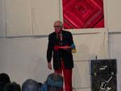

Practice Makes Permanent
4/13/2010
By Bob Abdou
I mean no disrespect but the old saying is true: "Practice makes permanent, NOT practice makes perfect."
An old vent named Nick Tomio from Chicago, (he passed away a few years ago),
Folks spend too much money on puppets. They spend time on lip control. They spend hours rehearsing. But they don't realize that they have spent NO time on themselves as a single entertainer. This is what I teach at my workshops: You work on the puppet, you work on the act and then you work on YOU!
If you practice something over and over again and it is wrong, it doesn't become perfect, it becomes permanent. I don't mean to make waves here, but if vent is going to be taken seriously, we have to look like we take it seriously, and what we wear on stage has a HUGE effect on the act.
* * * * * *
Here is a snippet from the Vent Haven website about Appearance from Al Getler.
"The second way to improve your act is your appearance. Develop a look that is professional and pleasing from the stage and suited to your audience. If you work with kids, wear kid friendly clothes like funny ties, an interesting vest, or something with color. If you're doing corporate work, wear a nice suit. In comedy clubs, it seems that just about anything goes, but make it fit your act. Even casual looking attire needs to seem like your costume. Hire a tailor and get your clothes fitted to you. The first impression you make with your audience is your appearance. If your clothes are too tight or ill-fitting, you will appear slovenly and unprepared. Your clothing should help set the tone without becoming a negative focus in your show. Get someone who will give you an honest answer to comment on your stage appearance. See if that person's comments meet with your opinion of how you look. Keep your haircut fresh and styled. Make sure you look good. Simple generally works better than busy or fussy. A professional appearance takes work, so be sure to work at it."
(September 2006, Tips and Techniques.)
I mean no disrespect but the old saying is true: "Practice makes permanent, NOT practice makes perfect."
An old vent named Nick Tomio from Chicago, (he passed away a few years ago),

used to ALWAYS wear a suit, jacket, pressed shirt and tie. I asked him, "why do you always dress up so nice?" He said, "Because when the audience sees an old man wearing a suit,they know something special is going on." And it is true. Each show our clothes should be special - not as if you just walked on stage from playing a round of golf.Folks spend too much money on puppets. They spend time on lip control. They spend hours rehearsing. But they don't realize that they have spent NO time on themselves as a single entertainer. This is what I teach at my workshops: You work on the puppet, you work on the act and then you work on YOU!
If you practice something over and over again and it is wrong, it doesn't become perfect, it becomes permanent. I don't mean to make waves here, but if vent is going to be taken seriously, we have to look like we take it seriously, and what we wear on stage has a HUGE effect on the act.
* * * * * *
Here is a snippet from the Vent Haven website about Appearance from Al Getler.
"The second way to improve your act is your appearance. Develop a look that is professional and pleasing from the stage and suited to your audience. If you work with kids, wear kid friendly clothes like funny ties, an interesting vest, or something with color. If you're doing corporate work, wear a nice suit. In comedy clubs, it seems that just about anything goes, but make it fit your act. Even casual looking attire needs to seem like your costume. Hire a tailor and get your clothes fitted to you. The first impression you make with your audience is your appearance. If your clothes are too tight or ill-fitting, you will appear slovenly and unprepared. Your clothing should help set the tone without becoming a negative focus in your show. Get someone who will give you an honest answer to comment on your stage appearance. See if that person's comments meet with your opinion of how you look. Keep your haircut fresh and styled. Make sure you look good. Simple generally works better than busy or fussy. A professional appearance takes work, so be sure to work at it."
(September 2006, Tips and Techniques.)